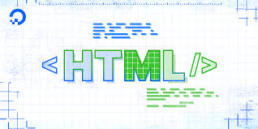

You can, and there are many blogging platforms specifically designed to be integrated with an HTML/CSS website. WordPress is the most common one, but DropInBlog is another up-and-coming star.1 Aug 2023 CSS stands for Cascading Style Sheets, and it plays a crucial role in blogging. In the context of blogging, CSS refers to the code that defines the visual appearance and formatting of a blog or website. It is used to control the layout, colors, fonts, and overall design elements of a blog.13 Jun 2023
